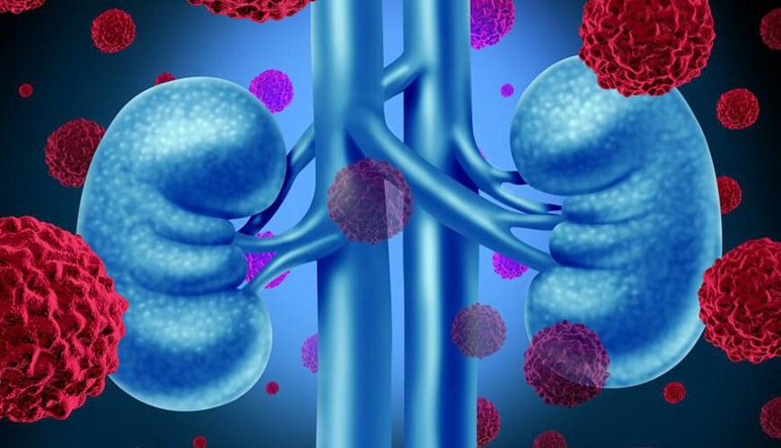
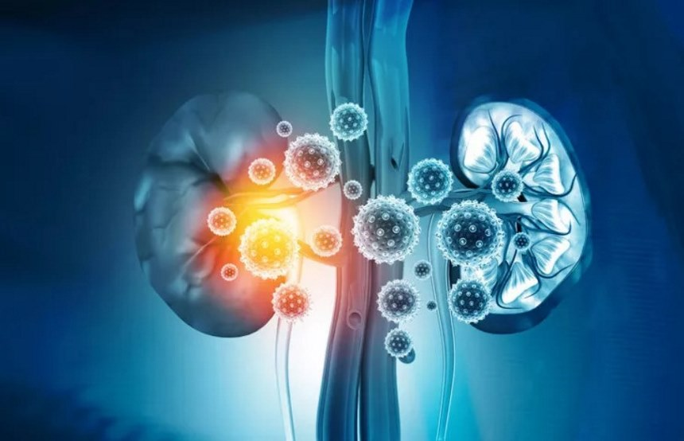

SM. Özgür KAHRAMAN
Sağlık Memuru
İletişim:
0507 228 30 70
ozgur.kahraman@renault.com
Türkiye Böbrek Vakfından
Ayşe ONAT'ın
katkılarıyla
COVID-19 GEÇİREN 90 BİN HASTA ÜZERİNDE YAPILAN ÇALIŞMA, UZUN DÖNEM BÖBREK HASTALIĞI RİSKİNİ ORTAYA KOYUYOR.
COVİD GEÇİRMEK BÖBREK SAĞLIĞI AÇISINDAN BİR RİSK FAKTÖRÜ OLARAK TANIMLANMIŞ DURUMDA!
Türk Böbrek Vakfı’nda Dünya Böbrek Günü’nde Hatırlatıyor: “COVID-19 geçirmiş kişilerin, hastalıktan sonraki ilk altı ay içinde böbrek sağlığı kontrollerini yaptırmaları, kronik böbrek hastalığının erken teşhisi ve tedavisi açısından önemlidir”
2005 yılından bu yana her yıl mart ayının ikinci haftası çeşitli etkinlikler anılan Dünya Böbrek Günü, tüm dünyada böbrek sağlığına dikkat çekmek üzere farklı konu ve temalar ile ele alınıyor.
Bu yıl “Herkes İçin Böbrek Sağlığı” adı altında ele alınan Dünya Böbrek Günü’nde, yakın zamanda Amerika’da tamamlanan “COVID-19 sonrası böbrek hastalıkları risklerine ilişkin yeni bulgular” araştırması masaya yatırıldı.
Türk Böbrek Vakfı’nda gerçekleştirilen basın toplantısına TBV Başkanı Timur Erk ve Türk Böbrek Vakfı Mütevelli Üyesi Nefroloji Uzmanı Prof. Dr. Rümeyza Kazancıoğlu katıldı. Toplantıda söz alan TBV Başkanı Timur Erk konuşmasına böbrek fonksiyonlarını hatırlatarak başladı; “150 gram olan böbrek, 200 litre kanı 24 saat devirdaim ederek vücudumuzun arıtma tesisi olarak görev yapıyor. Dünya Böbrek Günü için her yıl bir tema belirleniyor. Geçtiğimiz yıllarda da tuz, şeker ve trans yağlar gibi çeşitli konulara odaklandık ve bu konular üzerinde de başarılar elde ettik. Bu yıl “Herkes İçin Böbrek Sağlığı” adı altında yakın zamanda Amerika’da tamamlanan “COVID-19 sonrası böbrek hastalıkları risklerine ilişkin yeni bulgular” araştırması masaya yatırıyoruz” dedi.
Basın toplantısında konuşan Nefroloji Uzmanı Prof. Dr. Rümeyza Kazancığlu ise konuşmasına araştırma detayları ile başladı. Kazancıoğlu; “Biz pandemi sırasında hastalığa yakalanarak hastanede yatan ve yoğun bakıma giden hastalarımızın içinde, yeni gelişen akut böbrek hasarı dediğimiz, yani ani olarak böbreklerin bozulması veya diyalize ihtiyaç duyma kısmını gözlemledik. Çok yakın zamanda ise yayınlanan bir çalışmada bu hastalıktan kurtulsanız bile, yeni bir böbrek hasarı gelişmesi açısından riskli olunduğu ortaya konuldu. Amerika San Luis’de yapılan araştırmada, 90 bine yakın covid-19 nedeniyle hastanede yatan ya da evde tedavi gören hasta ile 1.5 milyondan fazla benzer yaş gurubundaki kişileri karşılaştıran bir çalışma yapıldı. Hastaneye yatmak, sonrası yoğun bakıma girmek ve o sırada böbrekle ilgili bir problemde gelişmesi, covid-19 geçirmemiş kimselere göre böbrek hastalığı açısından ciddi bir risk yaratıyor” dedi.
“COVİD-19 GEÇİRMEYEN HASTAYA GÖRE RİSK 11 KAT DAHA FAZLA”
Prof. Dr. Rümeyza Kazancıoğlu; “Maalesef araştırmada görülüyor ki tanıyı almak dahi bir risk faktörü getiriyor. Bunun yanında tanıyı alarak yoğun bakımda yatmak, akut böbrek yetersizliği ile ilgili yeniden bir hastalık yaşama riskini 11 kat arttırıyor. Ayrıca son dönem böbrek yetersizliğine doğru gitme riski ise 8 kat, böbrekle ilgili diyalize girmek veya ölümle ilgili rakamların bile hiç geçirmemiş popülasyona göre 8 kat arttığı gösterilmiştir. r. Bizde buna benzer bir çalışma yürüttük ve sonuçlarını toparlama aşamasındayız. Covid-19 geçirmek böbrek sağlığı açısından bir risk faktörü olarak tanımlanmış durumda.
Prof. Dr. Kazancıoğlu; Önemli bir konuya da değinmek isterim; hayatınızda bir dönem böbrekle ilgili geçici bir rahatsızlık yaşadığınızda uzun vadede kronik böbrek hastası olmak için bir risk kazanmış oluyorsunuz. Bu nedenle yılda bir kez böbrek kontrollerinin yaptırılmasını son derece önemli buluyoruz.
“İNEK VE DEVE İDRARI BÖBREK ŞİKAYETİ İÇİN KULLANILIYOR”
Türk Böbrek Vakfı Başkanı Timur Erk; “Türk böbrek Vakfı olarak daima bilimsel çalışmalara önem veriyoruz. Yaptığımız araştırmalarda bunu gösteriyor. Yakın zamanda yaptığımız araştırmada da oldukça çarpıcı sonuçlar elde edildi. Bunlardan öne çıkan noktalar ise, araştırmaya katılanların yüzde 72.2’si böbreklerini hiç kontrol ettirmiyor. Doktora danışmadan ağrı kesici kullanım oranı ise yüzde 66.6 olarak öne çıkıyor. Bunlar arasında en önemli noktalardan biri ise yalnızca ağrı kesiciler değil, doktora danışılmadan tüketilen çeşitli bitkisel ve hayvansal ürünler. Bunlarda, böbrekler başta olmak üzere iç organlara ciddi zararlar veriyor. Çarpıcı iki örnek vermek isterim, inek ve deve idrarı böbrek şikayetleri için başvurulan yöntemlerden biri ama bizim daha ziyade denenmiş ve kabul görmüş bitkisel ürünlere değinmemiz lazım. Bu noktada en önemli olan konu ise uygun dozlarda ve doktora danışılarak kullanılan destekler. Gilaburu adı verilen ve Sivas yöresinde yetişen yerel bir üründen bahsedebilir. Gilaburu isimli meyvenin suyu ilaç niyetine uygun dozda kullanıldığında böbrek taşlarına iyi geldiği biliniyor” dedi.
TBV Başkanı Erk; “Dünya Böbrek Günü’nde açıklanan araştırma sonuçları ışığında, riskli grupta olan veya böbrek sağlığı açısından kendini korumak isteyenlerin, covid-19 sonrası ilk 3-6 ay arası mutlaka kontrollerini yaptırmaları gerekmektedir. Bilinçsiz ilaç kullanmamak, sigara tüketiminde uzak durmak ve sporu hayatın bir parçası haline getirmenin yanında dengeli beslenmek ve özellikle şeker ile tuz tüketimde dikkatli olmak genel sağlık açısından olduğu gibi böbrek sağlığı açısında da son derece elzemdir” dedi.